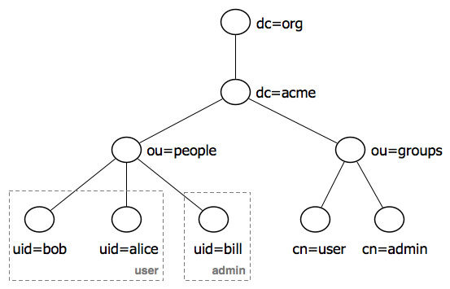
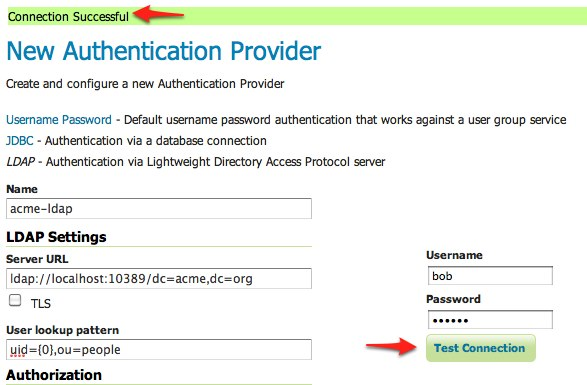
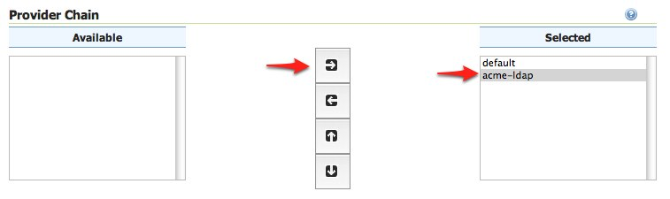
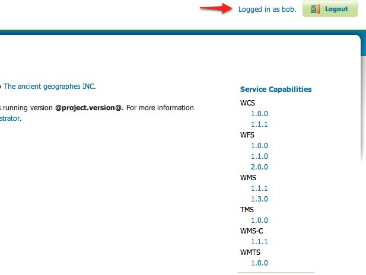
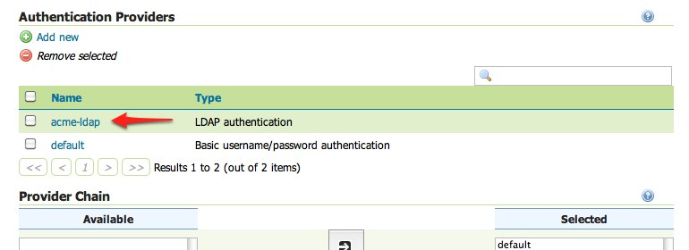
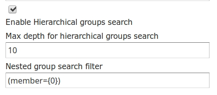
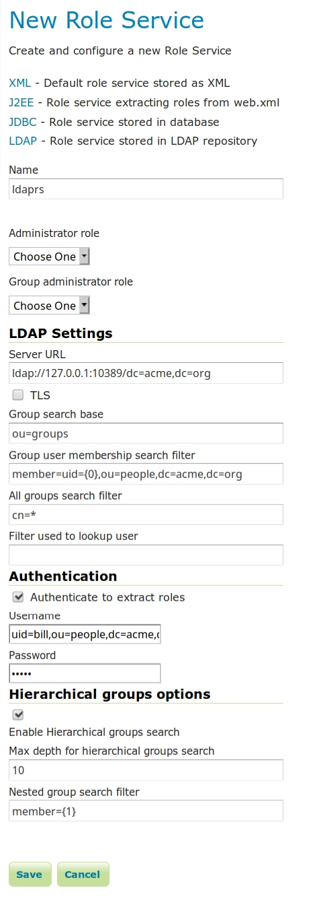

Authentication with LDAP¶
This tutorial introduces GeoServer LDAP support and walks through the process of setting up authentication aganist an LDAP server. It is recommended that the LDAP authentication section be read before proceeding.
LDAP server setup¶
A mock LDAP server will be used for this tutorial. Download and run the acme-ldap jar:
java -jar acme-ldap.jar
The output of which should look like the following:
Directory contents:
ou=people,dc=acme,dc=org
uid=bob,ou=people,dc=acme,dc=org
uid=alice,ou=people,dc=acme,dc=org
uid=bill,ou=people,dc=acme,dc=org
ou=groups,dc=acme,dc=org
cn=users,ou=groups,dc=acme,dc=org
member: uid=bob,ou=people,dc=acme,dc=org
member: uid=alice,ou=people,dc=acme,dc=org
cn=admins,ou=groups,dc=acme,dc=org
member: uid=bill,ou=people,dc=acme,dc=org
Server running on port 10389
The following diagram illustrates the hierachy of the LDAP datatabse:

The LDAP tree consists of:
The root domain component,
dc=acme,dc=orgTwo organizational units (groups) named
userandadminTwo users named
bobandalicewho are members of theusergroupOne user named
billwho is a member of theadmingroup
Configure the LDAP authentication provider¶
Start GeoServer and login to the web admin interface as the
adminuser.Click the
Authenticationlink located under theSecuritysection of the navigation sidebar.
Scroll down to the
Authentication Providerspanel and click theAdd newlink.
Click the
LDAPlink.
Fill in the fields of the settings form as follows:
Set
Nameto “acme-ldap”Set
Server URLto “ldap://localhost:10389/dc=acme,dc=org”Set
User lookup patternto “uid={0},ou=people”
Test the LDAP connection by entering the username “bob” and password “secret” in the connection test form located on the right and click the
Test Connectionbutton.A successful connection should be reported at the top of the page.
Save.
Back on the authentication page scroll down to the
Provider Chainpanel and move theacme-ldapprovider fromAvailabletoSelected.Save.
Test a LDAP login¶
Navigate to the GeoServer home page and log out of the admin account.
Login as the user “bob” with the with the password “secret”.

Logging in as bob doesn’t yield any administrative functionality because the bobaccount has not been mapped to the administrator role. In the next section GeoServer will be configured to map groups from the LDAP database to roles.
Map LDAP groups to GeoServer roles¶
When using LDAP for authentication GeoServer maps LDAP groups to GeoServer roles
by prefixing the group name with ROLE_ and converting the result to
uppercase. For example bob and alice are members of the user group so after
authentication they would be assigned a role named ROLE_USER. Similarily
bill is a member of the admin group so he would be assigned a role named
ROLE_ADMIN.
Log out of the web admin and log back in as the admin user.
Navigate to the
Authenticationpage.Scroll to the
Authentication Providerspanel and click theacme-ldaplink.On the settings page fill in the following form fields:
Set
Group search baseto “ou=groups”Set
Group search filterto “member={0}”
The first field specifies the node of the LDAP directory tree at which groups are located. In this case the organizational unit named
groups. The second field specifies the LDAP query filter to use in order to locate those groups that a specific user is a member of. The{0}is a placeholder which is replaced with theuidof the user.Set
Group to use as ADMINto “ADMIN”Set
Group to use as GROUP_ADMINto “ADMIN”
If you want support for hierarchical LDAP groups:
Check Enable Hierarchical groups search box.
Set
Max depth for hierarchical groups searchto 10 (-1 for infinite depth, or the depth number you want to support).Set
Nested group search filterto “member={0}”
These settings let users in the LDAP admin group to be recognized as GeoServer administrators.
Save.
At this point the LDAP provider will populate an authenticated user with roles based on the groups the user is a member of.
At this point members of the admin LDAP group should be given full
administrative privileges once authenticated. Log out of the admin account and
log in as “bill” with the password “hello”. Once logged in full administrative
functionality should be available.
Configure the LDAP role service¶
An additional step permits to configure a role service to get GeoServer roles from the LDAP repository and allow access rights to be assigned to those roles.
Click the
Users,Group,Roleslink located under theSecuritysection of the navigation sidebar.Click the
Add new linkunder theRole Servicessection.Click the
LDAPoption under theNew Role Servicesection.Enter
ldaprsin theNametext field.Enter
ldap://localhost:10389/dc=acme,dc=orgin theServer URLtext field.Enter
ou=groupsin theGroup search basetext field.Enter
member=uid={0},ou=people,dc=acme,dc=orgin theGroup user membership search filtertext field.Enter
cn=*in theAll groups search filtertext field.
Then we need to a choose a user to authenticate on the server (many LDAP server don’t allow anonymous data lookup).
Check the
Authenticate to extract rolescheckbox.Enter
uid=bill,ou=people,dc=acme,dc=orgin theUsernametext field.Enter
helloin thePasswordtext field.
If we want Hierarchical groups working we need:
Check the
Enable Hierarchical groups searchcheckbox.Enter
10in theMax depth for hierarchical groups searchtext field.Enter
member={1}in theNested group search filtertext field.Save.
Click the
ldaprsrole service item under theRole Servicessection.Select
ROLE_ADMINfrom theAdministrator rolecombobox.Select
ROLE_ADMINfrom theGroup administrator rolecombobox.Save again.
You should now be able to see and assign the new ROLE_ADMIN and ROLE_USER roles wherever an Available Roles list is shown (for example in the Data and Services rules sections.